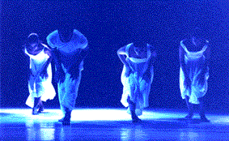
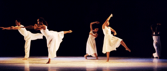
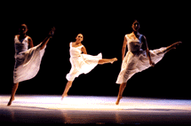
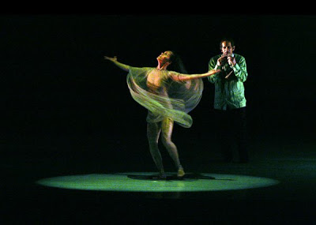
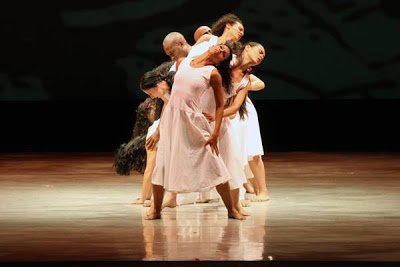
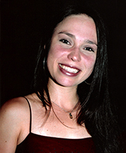
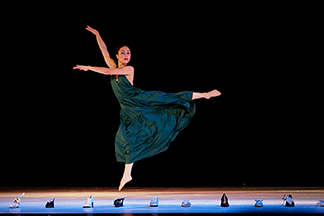

En mayo de 1983, al finalizar un
concierto de la ODILA en el Teatro CANTV, Emilio Mendoza conoció a
Carlos Orta de manos de la etnocoreólaga Gladys Alemán. Iniciaron
juntos un trabajo fructífero sin precedentes con coreografías de
Orta y música de Mendoza para las compañías Ballet Coreoarte y la
José Limón Dance Company de Nueva York. Se realizó música original
grabada para pedidos de Orta, como El Último Canto,
creada en una residencia en el Skidmore College, Saratoga, NY,
1984, pieza de repertorio de ambas compañías, así como
improvisaciones experimentales de música en vivo de coreografías
en silencio, como Transoñar en el Aula Magna de la UCV,
Caracas, 1985. Bajo la dirección y tenacidad de Noris Ugueto, se
continuó el trabajo musical de Mendoza con Coreoarte incluyendo
encargos, improvisaciones con el grupo de jazz Akurima en vivo, Giros,
2002, en la Colonia Tovar, así como piezas sinfónicas grabadas, como
Tregua para
orquesta, 1995 y actuaciones de Mendoza en los aniversarios de
Coreoarte de sus 25 y 30 años, 2008 y 2013. Se realizaron muchos
videos, reseñas en libros (Rubén Monasterio. Cuerpos en el
Espacio. Caracas: Gramovén, Editorial Arte, 1986, pag.
99), hemerografía, donde se destaca la pieza para Bandola solo y
bailarín solo, Memorias,
parte de El Último Canto, con video de Orta y Mendoza
juntos en producción de la USB, y la pieza de repertorio
permanente de Coreoarte, Etnocidio.
 
 El Último Canto, Coreoarte, 1995
Ver fragmento de Canto en la presentación del 35º
aniversario:
Orta y Mendoza, Sala Ribas, Teatro Teresa
Carreño, Caracas, 1985,
antes de una ejecución de Memorias,
después de haber danzado por todo el
perímetro del teatro
con su hija Elisa Shaxie recién nacida en sus brazos,
siendo Orta su padrino (ver poema El Bautizo).

Ancestro con
Alexandra Trejo y Mendoza ejecutando flautas indígenas, en el
30º aniversario,
Sala Rios Reyna, Teatro Teresa Carreño, Caracas, 2013. (Foto
Iván Ordóñez)

Etnocidio,
de El Último Canto, en el
30º aniversario de Coreoarte,
Sala Ríos Reyna, Teatro Teresa Carreño, Caracas, 2013.
(Foto Iván Ordóñez)
Mendoza escribió un artículo sobre las innovaciones de Orta
en la danza contemporánea de Venezuela después de su muerte:
"Carlos Orta
y Coreoarte: Aportes para la Danza Contemporánea Venezolana”.
Revista Nacional de Cultura, Año LXXIII, 2011, Nº 338, Tomo
II, ISSN: 0035-023. Caracas: Fundación Casa Nacional de las Letras
Andrés Bello, pag. 211 - 223.
El tercer videoarte de Benno Richard Mauler Strike the Balance
que realizó con Emilio Mendoza, incluye muchas tomas de Orta y los
bailarines de Coreoarte, 1988.
Dos bailarinas principales de Coreoarte actualmente,
Nathalia Molina y Nayibe Berroterán, han actuado en varios
conciertos de Ozono Jazz y de experimentos de Traslación AVIA
en el Centro de Arte Los Galpones, Caracas, 2012-2013.
 
Nathalia Molina, bailarina principal de Coreoarte.
Nayibe Berroterán, bailarina principal de
Coreoarte. Los Diamantes (trad. ven.,
arrgl. E. Mendoza)
ejecución de Emilio Mendoza en la Bandola Llanera
en Düsseldorf, Alemania, junio 1984, cuando Coreoarte estaba de
gira,
junto a Mandingo Rengifo, maracas y Antonio en el cuatro y
bailarines de Coreoarte Poy Márquez y Efraín.